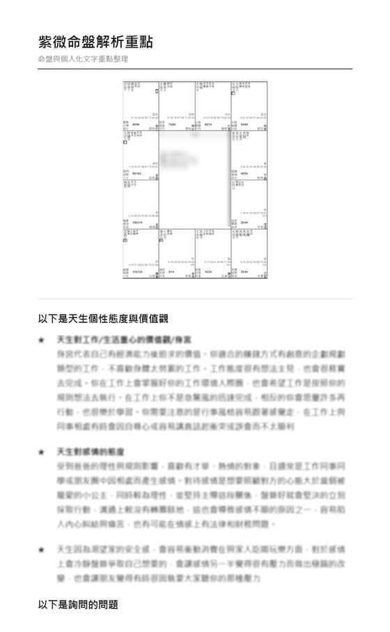
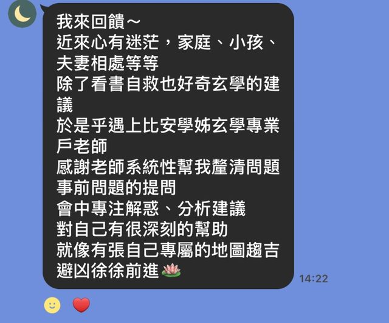
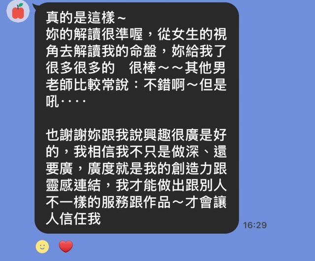
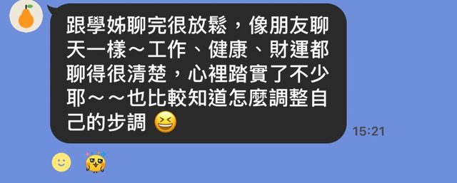
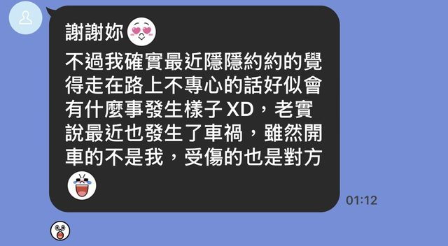
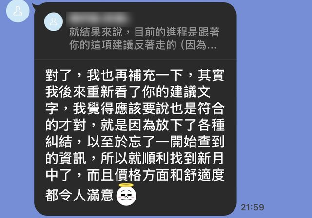
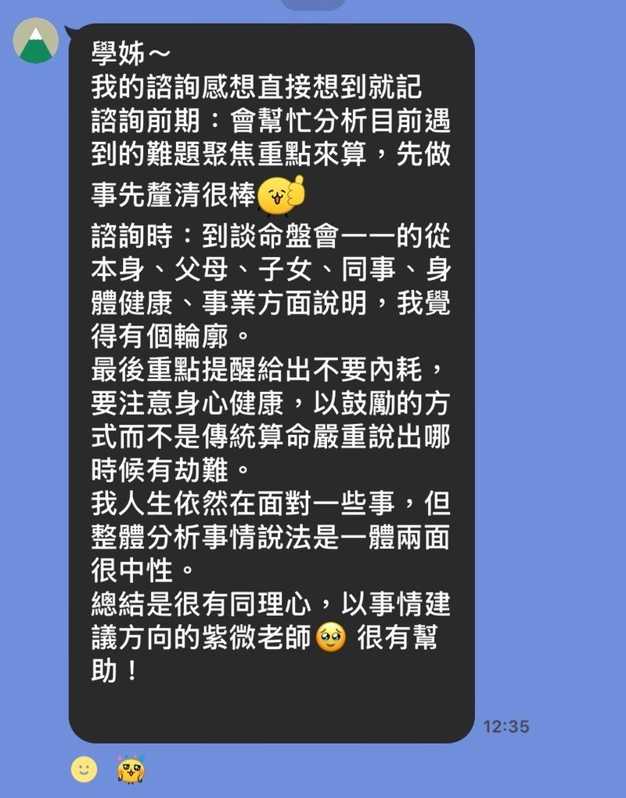
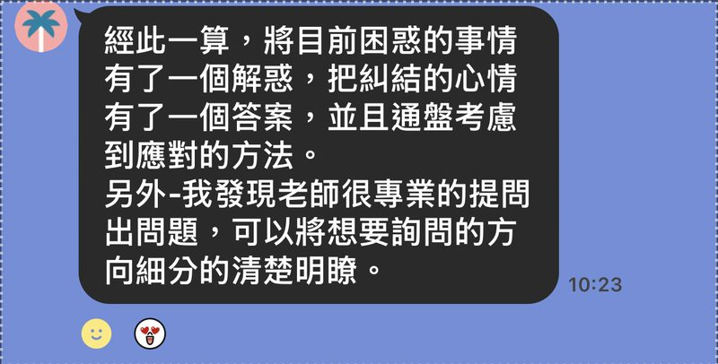

你是不是也有這些困擾？
- 我打算離職，想找新的工作方向
- 這段感情能穩定走下去嗎？還是會有變數？
- 一直換工作，我到底適合做什麼？
- 我好不安，想先知道今年的運勢會怎麼樣
- 今年的財運會怎麼樣？我怕今年大破財
- 最近工作怎麼做都不順，是不是有人在背後扯我後腿？
他們也曾這樣卡關
整理幾個曾經被問過的問題，我很重視每個個案的保密
做了五年，有升遷或加薪的機會嗎？還是該轉職換工作？
我在同一間公司做了五年，薪水沒什麼變，也看不到下一步。我該繼續等，還是早點離開？看著身邊朋友工作順遂、加薪升遷，我好猶豫...
今年會不會大破財？有中獎機會嗎？
今年的開銷突然變好多，存款一直在減少，我好焦慮。聽到朋友股市賺了很多錢，真的好羨慕，我什麼時候才會變有錢？
我們這段關係還適合繼續嗎？他對我有沒有好感？
我一直猜不透他的心思，回應忽冷忽熱，我們還常常吵架。繼續下去怕受傷，放手又捨不得，我真的好累...
我的人生好迷惘低潮，不知道我適合做什麼？
最近整個人很低落，做什麼都提不起勁。身邊的人好像都知道自己要什麼，只有我停在原地，不知道自己到底適合什麼...
每天騎車通勤，哪些關鍵時刻要特別留意，才能趨吉避凶？
我每天騎車通勤，路上車那麼多，心裡總是有點不安。新聞上的車禍事故越來越多，我很擔心：會不會哪一天，換成是我？
孩子的選擇，我該如何引導轉向和支持？
我擔心孩子走歪，又怕管太多讓關係變僵。放手好像不負責，插手又吵架，我不知道怎麼做才對，晚上常常睡不著...
我能幫你做的
聽了一小時，一週後只記得三件事
那位命理師阿北，用很平穩、音調一致的聲音，把我的命盤講了一個小時。
聽到接下來可能會發生的事，我當下真的超震撼。
但中間一堆我聽不懂的，什麼飛星、忌沖對宮…，只能用點頭表示收到。
朋友好奇問我：「老師怎麼說？」
我努力回想，只記得幾件印象比較深的事。
連到底要注意哪一年，我都記得模模糊糊的，不太確定欸…
那一刻真的好怨嘆喔…
錢花了、時間也花了，聽到的卻有一半已經還給老師。
所以後來換我幫人解盤，第一件事就是：
把重點寫下來給你。
你不用邊聽邊抄，也不怕回家就忘。
哪一年要注意什麼，隨時打開就看得到。
諮詢後，你會拿到這樣的解析
我會附上親手整理的文字版重點，讓你在不確定、猶豫的時候，有個可以回頭對照的參考。
- 你卡關的主題，對應命盤裡看到的原因和各種選擇
- 我用白話整理成重點，不賣弄術語
- 今年的節奏起伏，還有你自己沒注意到的盲點，一次攤開來看

紫微斗數，讓你更有策略地掌握機會、避開風險，讓人生更順利
每月名額有限，歡迎提早預約
為什麼找我
我不是最資深的老師，
但我會用最認真、最誠實的方式陪你看盤
親手看盤、親手整理
每一張命盤都是我自己一宮一宮看、親手寫下重點，不交給 AI。我很享受看盤的過程，因為看懂一個人，本來就急不來。
看盤前先花 1 天細讀
確認你的命盤和問題後，我會先細讀，不是當場才開始看，所以不算快，但每張都認真。
超過 200 小時專業課程研習
我取得了專業課程證照，也一直在替人解盤，希望把古人的智慧，好好用在你真實的人生問題上。
說實話，不推銷
不適合的問題我會直接說，不用恐嚇話術、不賣改運商品，15 分鐘 LINE 諮詢完全免費。
白話解說＋小行動
不講你聽不懂的術語，並陪你把洞察變成可以立刻開始的小行動。
嚴守個案隱私
你的生辰與談話內容完全保密。同時守住專業界線：不談生死、不取代醫療診斷。
諮詢過的人這樣說
每一則都是諮詢後收到的真實回饋，經同意後分享
結婚多年，彼此關係越來越平淡，想知道我們的感情關係會怎麼發展？我也想知道預計轉換工作跑道會不會賺錢？還有自己適不適合投資？
原始回饋截圖

好想談戀愛，我什麼時候脫單？和曖昧對象有機會在一起嗎？我想要創業發展個人品牌，結果會如何？什麼時候比較有機會斜槓轉正職？
原始回饋截圖

在這間餐廳工作三年多了，什麼時候有升職加薪的機會？還有想知道今年有沒有血光或車關意外？今年也覺得好容易累，身體健康方面我要注意那些？我今年財運好嗎？
原始回饋截圖

想知道今年流年運勢，還有我在這一個月可以找到性價比高的月子中心嗎？因為收到原本預定的月中，通知要內部裝修施工，雖然對方強調不影響休養，但仍覺得很不安，而且好的月中通常搶手，很難有空位釋出...
原始回饋截圖


我不喜歡現在的工作，我有機會考上高考嗎？還是要繼續待著和有沒有機會升遷？因為小孩教養議題，和前夫溝通很不順暢常爭吵，想知道他在意小孩嗎？這幾年身體狀況不太好，想知道什麼時候會變好？
原始回饋截圖

在這間公司做了 20 年，明年找新工作順利嗎？想知道什麼樣的工作內容比較合適？
原始回饋截圖

諮詢方案
每次諮詢前，
我會花 1 天細讀你的命盤和問題
我看盤不算快，但每一張都很認真看
因為我真心想幫每位來找我的夥伴，解開心裡的卡關
諮詢當天會提供我親手整理的重點紀錄，不是 AI 做的
你不用自己做筆記，我們專心對談就好
線上問事占卜（紫微牌）
首次加 LINE 諮詢享優惠價500元
服務包含
- 諮詢當下洗牌，以你的直覺感受來抽牌卡，過程都看得到
- 幫你分析事情的走向與牌卡建議
- 對談時間 20 分鐘
提問說明
- 心中有件事，現在很想知道答案
- 不用給生日，直接問就好
- 針對 6 個月內的具體事件
文字版個人命盤問題解析
首次加 LINE 諮詢享優惠價800元
服務包含
- 針對你的一個問題，解析個人命盤
- 3 個工作天內以 LINE／Email 提供書面分析
文字版說明
- 適合沒時間安排面談，或對面談有些緊張、不自在的人
- 喜歡用文字思考，不需社交
線上一對一諮詢
服務包含
- 諮詢前，我會先幫你排盤、細讀命盤，並整理重點筆記
- 諮詢當天 60 分鐘對談
- 當天提供重點筆記，不用擔心忘記
諮詢說明
- 不限地區，有網路就能諮詢
- 使用 Google Meet，語音或視訊皆可
- 也可討論改用 LINE 語音通話
實體一對一諮詢
服務包含
- 諮詢前，我會先幫你排盤、細讀命盤，並整理重點筆記
- 諮詢當天 60 分鐘對談
- 當天提供重點筆記，不用擔心忘記
諮詢說明
- 地點以台北為主
- 有些話當面講比隔著螢幕自在，比較能慢慢說
- 不用擔心網路或畫面問題，可以專心把時間留給自己
線上實體流年運勢分析
服務包含
- 諮詢前，我會先幫你排盤、細讀命盤，並整理重點筆記
- 諮詢當天 60 分鐘對談
- 當天提供重點筆記，不用擔心忘記
流年說明
- 想知道這一年，會發生什麼事
- 哪幾個月，工作容易有變動
- 感情有沒有重要事件
- 財運什麼時候適合衝
- 什麼時候意外風險較高要多注意
怎麼進行
選擇服務項目
可在 LINE 上先做免費諮詢，確認可以服務的問題，再進一步進行預約，不適合用紫微命盤看的，我也不想讓你白花錢
填寫資料
提供出生資料與想了解的問題
確認時間與付款
完成付款即保留預約時段
諮詢與交付
諮詢當天給你重點摘要，陪你把洞察變成行動
常見問題
一對一諮詢跟文字版諮詢有什麼差別？
- 一對一諮詢是 60 分鐘對談，適合需要來回討論的複雜問題。
- 文字版諮詢是聚焦一個問題，3 個工作日內以 LINE／Email 提供書面分析，適合沒時間安排面談，或對面談有些緊張、不自在的人，可以透過閱讀文字報告，沉澱思考，不需要社交。
不知道準確的出生時間怎麼辦？
排盤需要精確的出生年、月、日、時，如果不確定可至戶政事務所查閱（台灣地區）。
我的生辰和諮詢過程中的問題會保密嗎？
你的生辰資料和諮詢過程中的所有事情都會保密，不會對外分享或公開。
你也做 AI 相關的服務，解盤會用 AI 嗎？
不會。AI 是我在數位策略顧問工作上用的工具，紫微是另一項完全分開的服務。命盤我都自己看，因為我喜歡看盤，也覺得每個人的狀況需要真的被讀懂，這個我不想交給 AI。
紫微斗數命盤可以討論哪些主題？
只要和你的人生有關，大多都可以討論，不管是：
- 人生方向與目標
- 工作機會與職涯規劃
- 事業發展與創業
- 財務與金錢觀
- 感情與人際關係
- 健康與風險提醒
- 最近卡關、不知道怎麼選擇的事情
紫微斗數都可以從不同角度切入，幫你整理目前的狀況與可能的選擇。
如果臨時有事，可以改期嗎？
- 請於諮詢日前 3 天告知，我們會一起安排新的時間。
- 若當天臨時遲到或未事先通知缺席，等待 15 分鐘後將視同取消，恕無法退費。
- 每個預約時段，都代表有人願意把時間留給自己的生命課題，我也希望公平尊重每一位來諮詢的人。
什麼問題不適合來問？
不詢問生死相關議題，以及無法取代醫療診斷，健康疑慮請務必尋求專業醫生建議，紫微斗數僅提供健康與意外風險提醒。